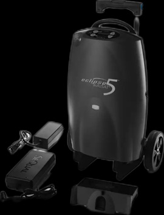
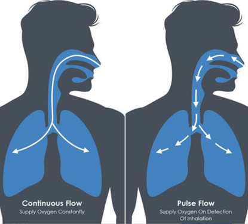
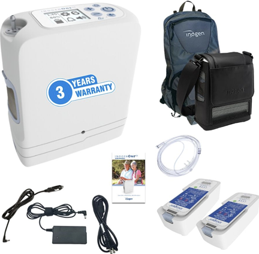
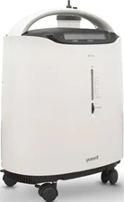
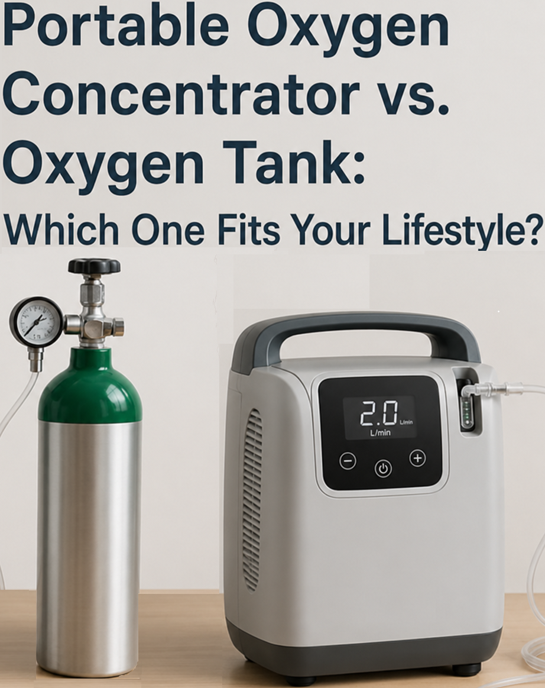
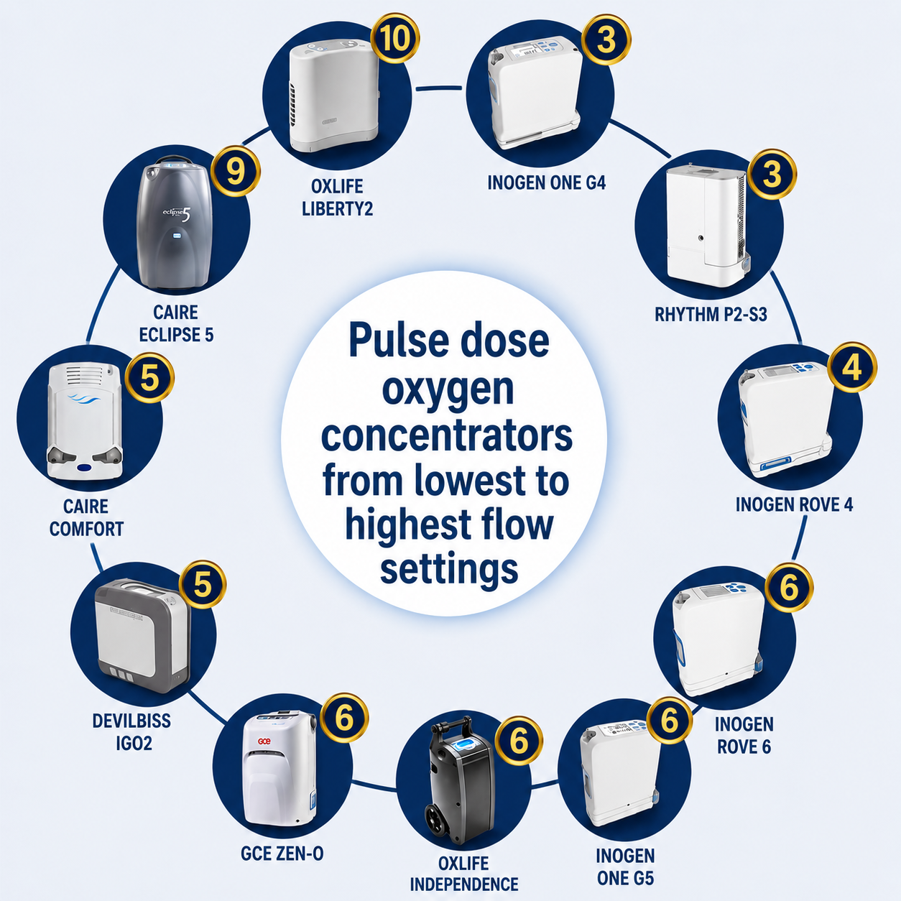

Types of Oxygen Concentrators

Home (Continuous Flow)
Larger, non-portable units designed for home use. They provide continuous oxygen flow, typically up to 5–10 liters per minute, and are commonly used for long-term therapy.

Portable (Pulse Dose)
Lightweight units that deliver oxygen only when you inhale (pulse dose). This helps conserve battery life and makes them ideal for walking, traveling, and daily activities.

Portable (Continuous & Pulse)
Larger portable units with wheels. They can provide both continuous flow and pulse dose, offering more flexibility but with increased weight and lower battery duration.
What I Can Help You With

Understanding Oxygen Flow
Guidance on liters per minute, pulse settings, and how to use your prescribed oxygen correctly during rest, sleep, and activity.

Battery & Travel Planning
How long your battery will last, how many you need for outings, and how to safely plan travel with your equipment.

Alarms & Troubleshooting
Understanding warning sounds, low oxygen alerts, or machine issues, and what steps to take when something doesn’t seem right.

Oxygen Safety
Safe use of oxygen at home and outdoors, including fire prevention, proper storage, and avoiding common risks.

Mobility & Daily Life
How to stay active, go outside, and maintain independence while using oxygen therapy.

Choosing the Right Equipment
Understanding the differences between models, features, and what works best for your specific needs and budget.
Oxygen therapy is highly effective when used correctly. If you are unsure about your equipment, settings, or daily use, I can guide you step by step so you feel confident, safe, and in control.